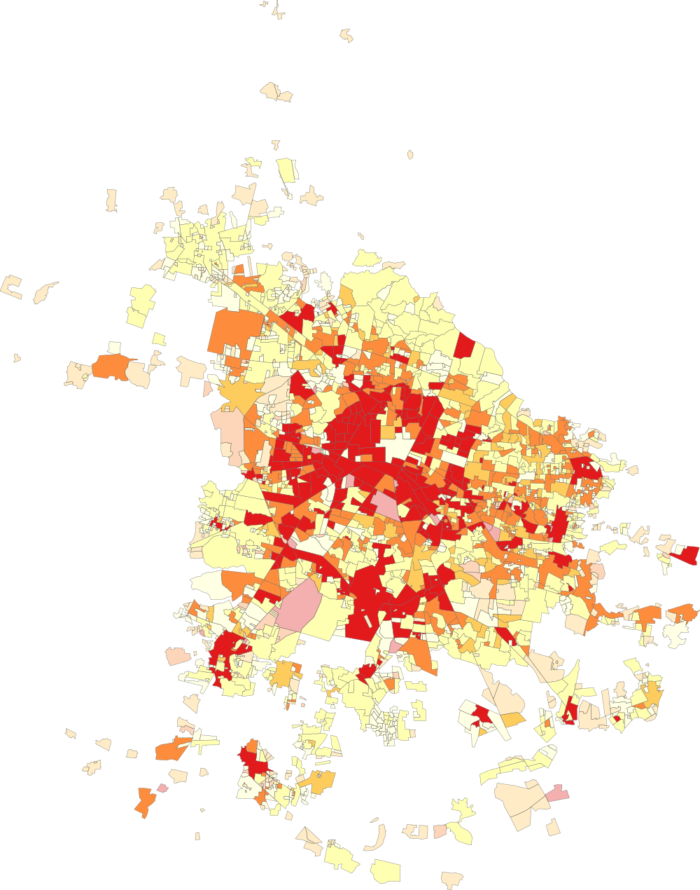
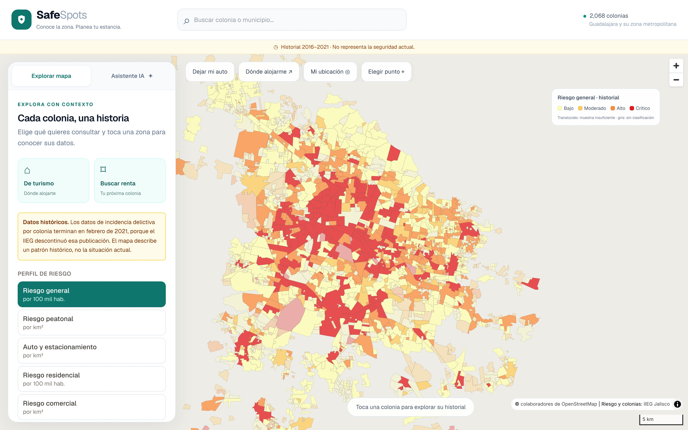

SafeSpots es una plataforma web que mide el riesgo delictivo por colonia en la ZMG con datos oficiales del IIEG y el INEGI, y lo muestra en un mapa interactivo.
Objetivo: crear un índice de riesgo comparable por colonia que ayude a decidir dónde alojarse, rentar o estacionarse.
No existe un indicador de riesgo comparable por colonia; los datos públicos están en tablas difíciles de interpretar.
| General | Peatonal | Vehicular | Residencial | Comercial |
|---|---|---|---|---|
| por 100 mil hab. | por km² | por km² | por 100 mil hab. | por km² |


| Objetivo | Resultado | Estado |
|---|---|---|
| Proceso reproducible | ETL completo en 5 s | Cumplido |
| Cobertura mayor a 80% | 84.4% de delitos ubicados | Cumplido |
| Índice por perfil | 2,068 colonias por 5 perfiles | Cumplido |
| Aplicación web | Desplegada en Vercel | Cumplido |
| Efecto del índice | Hasta 186 veces más rápido | Cumplido |
| Hipótesis | Confirmada; sin análisis por hora | Parcial |